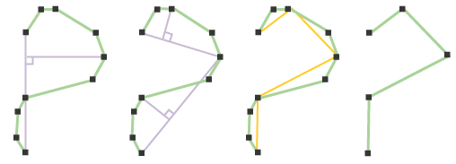

Generalización
El proceso de generalización de líneas y polígonos es un tipo de compresión de datos, consistente en reducir la cantidad de datos necesaria para transmitir una información. En este caso se trataría de reducir el número de vértices de una polilínea o de un polígono sin que se pierda información esencial sobre éste o se modifique sustancialmente.

gvSIG soporta dos tipos de generalización: no topológica (aplicando el algoritmo de Douglas-Peucker) y topológica. En este último caso,
los arcos cerrados seguirán siendo arcos cerrados, y los polígonos conservarán su topología.
En ambos casos es necesario proporcionar una distancia de tolerancia perpendicular que determinará el grado de filtrado.